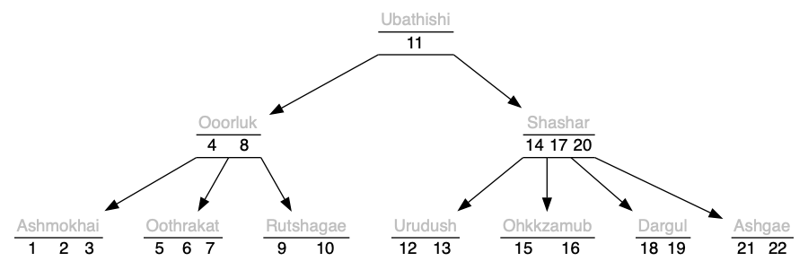

tree_result
enum tree_result { TREE_RESULT };
A result of modifying the tree, of which TREE_ERROR is false.

Header ../src/tree.h; examples ../test/test_tree.c; article ../doc/tree/tree.pdf.

A <t>tree is an ordered set or map contained in a tree; the order is suppled by <t>less. For memory locality, this is implemented B-tree, described in Bayer, McCreight, 1972, Large.
All operations are fail-fast and will not compromise the integrity of any existing tree. As a B-tree, this is not stable.
Adding, deleting, or changes in the topology of the tree invalidate the iterator. To modify the tree while iterating, take the <T>key and restart the iterator with <T>less or <T>more as appropriate.<t> that satisfies C naming conventions when mangled, required, and TREE_KEY, a type, <pT>key, whose default is unsigned int.(a, b) -> a < b.[3, UINT_MAX+1]. Default 65 is tuned to an integer to pointer map, and should be okay for most variations. 4 is isomorphic to left-leaning red-black tree, Sedgewick, 2008, LLRB. The above illustration is 5.<name>[<trait>]to_string be declared as <pT>to_string_fn.tree.h multiple times with TREE_EXPECT_TRAIT and then subsequently including the name that satisfies C naming conventions when mangled in TREE_TRAIT.typedef TREE_VALUE <pT>value;
On TREE_VALUE, this creates a map, otherwise a set of <pT>key.
typedef int(*<pT>less_fn)(const <pT>key a, const <pT>key b);
Inducing a strict weak order by returning a positive result if a is out-of-order with respect to b. It only needs to divide entries into two instead of three categories. Compatible, but less strict then the comparators from bsearch and qsort. For example, return a > b or return strcmp(a, b) would give an ascending tree.
typedef void(*<pT>to_string_fn)(const <pT>key, const <pT>value *, char(*)[12]);
The type of the required <tr>to_string. Responsible for turning the read-only argument into a 12-max-char output string. <pT>value is omitted when it's a set.
enum tree_result { TREE_RESULT };
A result of modifying the tree, of which TREE_ERROR is false.
| Modifiers | Function Name | Argument List |
|---|---|---|
| static <pT>key | <T>key | cur |
| static <pT>value * | <T>value | cur |
| static struct <T>cursor | <T>less | tree, x |
| static struct <T>cursor | <T>more | tree, x |
| static struct <t>tree | <t>tree | |
| static void | <t>tree_ | tree |
| static void | <T>clear | tree |
| static size_t | <T>count | tree |
| static int | <T>contains | tree, x |
| static <pT>value | <T>get_or | tree, key, default_value |
| static <pT>key | <T>less_or | tree, x, default_key |
| static <pT>key | <T>more_or | tree, x, default_key |
| static enum tree_result | <T>bulk_assign | tree, key, value |
| static enum tree_result | <T>bulk_try | tree, key |
| static int | <T>bulk_finish | tree |
| static enum tree_result | <T>assign | tree, key, valuep |
| static enum tree_result | <T>try | tree, key |
| static enum tree_result | <T>update | tree, key, eject, value |
| static int | <T>remove | tree, key |
| static int | <T>clone | tree, source |
| static const char * | <TR>to_string | box |
| static <pT>value | <T>tree<R>get | tree, key |
static <pT>key <T>key(const struct <T>cursor *const cur)
cur when it points at a valid element.static <pT>value *<T>value(const struct <T>cursor *const cur)
cur when it points at a valid element, if TREE_VALUE.static struct <T>cursor <T>less(struct <t>tree *const tree, const <pT>key x)
static struct <T>cursor <T>more(struct <t>tree *const tree, const <pT>key x)
tree such that <T>more is the smallest key that is greater-than-or-equal-to x, or, (…) if x is greater than all in tree.tree|)static struct <t>tree <t>tree(void)
Zeroed data (not all-bits-zero) is initialized.
static void <t>tree_(struct <t>tree *const tree)
Returns an initialized tree to idle, tree can be null.
tree|)static void <T>clear(struct <t>tree *const tree)
Clears tree, which can be null, idle, empty, or full. If it is empty or full, it remains active, (all except one node are freed.)
tree|)static size_t <T>count(const struct <t>tree *const tree)
Counts all the keys on tree, which can be null.
tree|)static int <T>contains(const struct <t>tree *const tree, const <pT>key x)
x in tree (which can be null)?tree|)static <pT>value <T>get_or(const struct <t>tree *const tree, const <pT>key key, const <pT>value default_value)
key in tree, or if no key, default_value. The map type is TREE_VALUE and the set type is TREE_KEY.tree|)static <pT>key <T>less_or(const struct <t>tree *const tree, const <pT>key x, const <pT>key default_key)
For example, tree = { 10 }, x = 5 -> default_value, x = 10 -> 10, x = 11 -> 10.
tree less-then-or-equal to x or default_key if x is smaller than all in tree.tree|)static <pT>key <T>more_or(const struct <t>tree *const tree, const <pT>key x, const <pT>key default_key)
For example, tree = { 10 }, x = 5 -> 10, x = 10 -> 10, x = 11 -> default_value.
tree greater-than-or-equal to x or default_key if x is greater than all in tree.tree|)static enum tree_result <T>bulk_assign(struct <t>tree *const tree, <pT>key key, <pT>value **const value)
Only if TREE_VALUE is set; the set version is <T>try. Packs key on the right side of tree without doing the usual restructuring. All other topology modification functions should be avoided until followed by <T>bulk_finish.
TREE_ERROR and errno will be set, TREE_PRESENT if the key is already (the highest) in the tree, and TREE_ABSENT, added, the value (if applicable) is uninitialized.x is smaller than the largest key in tree.tree|)static enum tree_result <T>bulk_try(struct <t>tree *const tree, <pT>key key)
Only if TREE_VALUE is not set; see <T>assign, which is the map version. Packs key on the right side of tree.
static int <T>bulk_finish(struct <t>tree *const tree)
Distributes tree (can be null) on the right side so that, after a series of <T>bulk_try or <T>bulk_assign, it will be consistent with the minimum number of keys in a node.
tree|)static enum tree_result <T>assign(struct <t>tree *const tree, const <pT>key key, <pT>value **const valuep)
Adds or gets key in tree. If key is already in tree, uses the old value, vs <T>update. (This is only significant in trees with distinguishable keys.)
TREE_VALUE (map) was specified. If this parameter is non-null and a return value other then TREE_ERROR, this receives the address of the value associated with the key. This pointer is only guaranteed to be valid only while the tree doesn't undergo structural changes, (such as potentially calling it again.)TREE_ERROR (false) and doesn't touch tree, TREE_ABSENT and adds a new key with key, or TREE_PRESENT there was already an existing key.tree|)static enum tree_result <T>try(struct <t>tree *const tree, const <pT>key key)
Only if TREE_VALUE is not defined. Adds key to tree only if it is a new value, otherwise returns TREE_PRESENT. See <T>assign, which is the map version.
static enum tree_result <T>update(struct <t>tree *const tree, const <pT>key key, <pT>key *const eject, <pT>value **const value)
Adds or updates key in tree.
TREE_PRESENT, the old key is stored in eject, replaced by key. A null value indicates that on conflict, the new key yields to the old key, as <T>try. This is only significant in trees with distinguishable keys.TREE_VALUE (map) was specified. If this parameter is non-null and a return value other then TREE_ERROR, this receives the address of the value associated with the key.TREE_ERROR (false,) errno is set and doesn't touch tree; TREE_ABSENT, adds a new key; or TREE_PRESENT, there was already an existing key.tree|)static int <T>remove(struct <t>tree *const tree, const <pT>key key)
Tries to remove key from tree.
tree.tree|)static int <T>clone(struct <t>tree *const restrict tree, const struct <t>tree *const restrict source)
source is copied to, and overwrites, tree.
tree is empty, then it continues to be.tree is not modified.tree is null.source nodes doesn't fit into size_t.source| + |tree|) time and temporary space.static const char *<TR>to_string(const <pT>box *const box)
src/to_string.h: print the contents of box in a static string buffer of 256 bytes, with limitations of only printing 4 things in a single sequence point.
static <pT>value <T>tree<R>get(const struct <t>tree *const tree, const <pT>key key)
This is functionally identical to <T>get_or, but a with a trait specifying a constant default value.
key in tree, (which can be null.) If no such value exists, the TREE_DEFAULT is returned.tree|).2022 Neil Edelman, distributed under the terms of the MIT License.